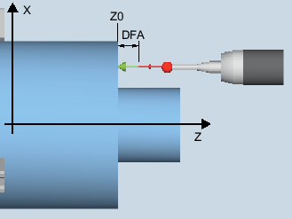

Gilt nur auf Drehmaschine ohne die Technologie Fräsen.
Mit dieser Messvariante kann ein Werkstückmesstaster mit den Schneidenlagen SL=5 bis 8 an einer bekannten Fläche (werkstückbezogen) abgeglichen werden. Damit werden die Triggerpunkte des Messtasters ermittelt.
Optional kann über den Parameter "Werkzeuglänge anpassen" die tatsächliche Länge in den Werkzeugkorrekturspeicher eingetragen werden.
Die ermittelte Schaltposition des Werkstückmesstasters in einer Achse wird mit der jeweiligen Messtasterlänge verrechnet. Der berechnete Triggerpunkt wird in der entsprechenden Achse und Achsrichtung ermittelt und in den gewählten Abgleichdatensatz (Kalibrierdatenfeld) des Werkstückmesstasters eingetragen.
Der Messtaster fährt in Messrichtung an die Kalibrierfläche (z. B. Werkstück).
Abgleich: Länge an Fläche (CYCLE973), Beispiel G18, SL=7
Die Fläche muss achsparallel zu einer Achse des Werkstückkoordinatensystems (WKS) liegen.
Die Kalibrierfläche muss eine geringe Oberflächenrauigkeit besitzen.
Der Werkstückmesstaster wird als Werkzeug mit Werkzeugkorrektur aufgerufen.
Als Messtastertyp ist 580 zu vereinbaren.
Der Abgleich der Messtasterlänge stellt kein Werkzeugvermessen dar. Die Abweichung der physikalischen Messtasterlänge, von den Werten in den Werkzeugdaten, muss kleiner 5 mm / 0.2 inch betragen.
Der Messtaster ist gegenüber der Kalibrierfläche zu positionieren.
Der Messtaster steht im Abstand des gewählten Messweges (DFA) gegenüber der Kalibrierfläche.
Siehe auch:
Abgleich: Länge an Fläche (CYCLE973)